LED連接到GPG-5
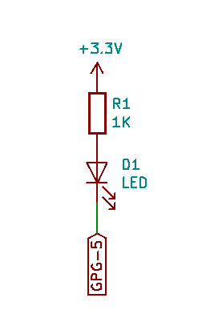
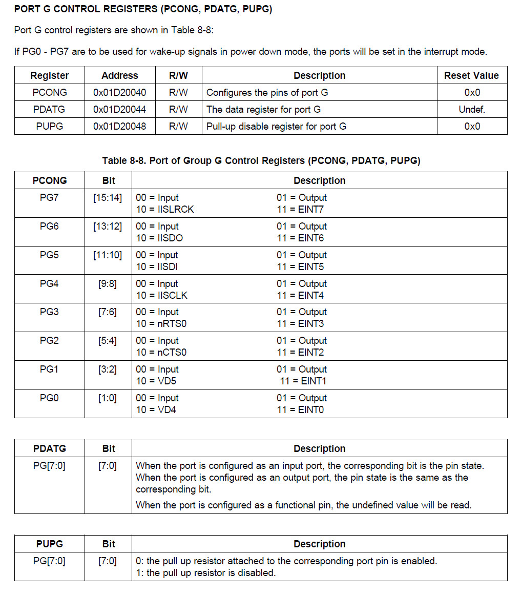
.equiv PCONG, 0x1d20040
.equiv PDATG, 0x1d20044
.text
.global _start
_start: b reset
_undef: b .
_swi: b .
_pabort: b .
_dabort: b .
_reserved: b .
_irq: b .
_fiq: b .
reset:
ldr r0, =PCONG
ldr r1, =(1 << 10)
str r1, [r0]
ldr r0, =PDATG
0:
eor r1, #(1 << 5)
str r1, [r0]
ldr r2, =50000
1:
subs r2, #1
bne 1b
b 0b
.end
main.ld
MEMORY {
flash : ORIGIN = 0, LENGTH = 2M
}
SECTIONS {
text : {
*(.text)
} > flash
}
Makefile
all: arm-none-eabi-as -mcpu=arm7 -o main.o main.s arm-none-eabi-ld -T main.ld -o main.elf main.o arm-none-eabi-objcopy -O binary main.elf main.bin clean: rm -rf main.bin main.o main.elf
編譯
$ make
arm-none-eabi-as -mcpu=arm7 -o main.o main.s
arm-none-eabi-ld -T main.ld -o main.elf main.o
arm-none-eabi-objcopy -O binary main.elf main.bin
Target Device
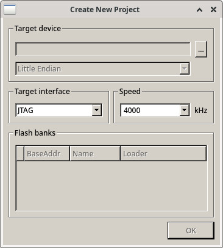
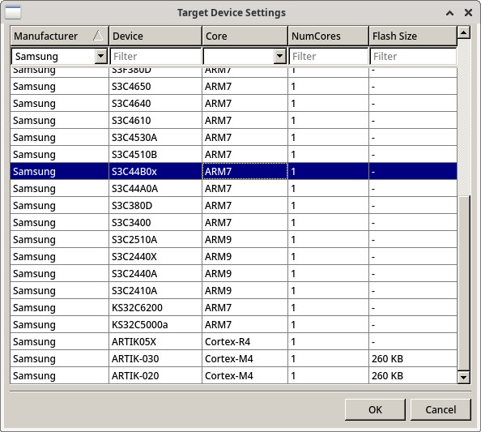
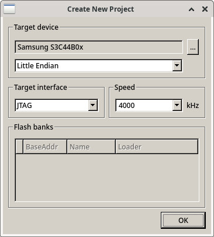
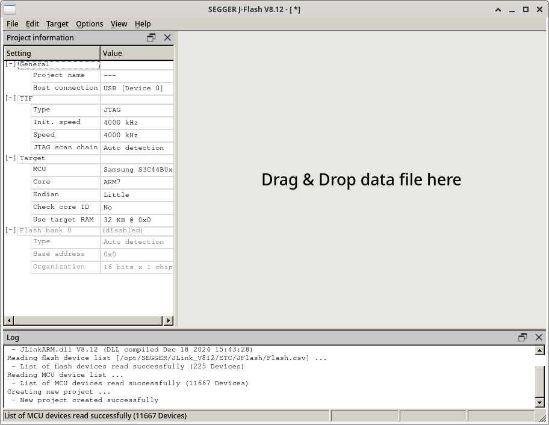
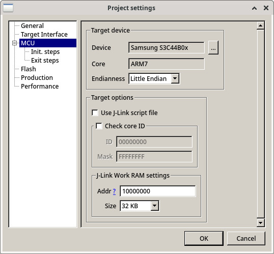
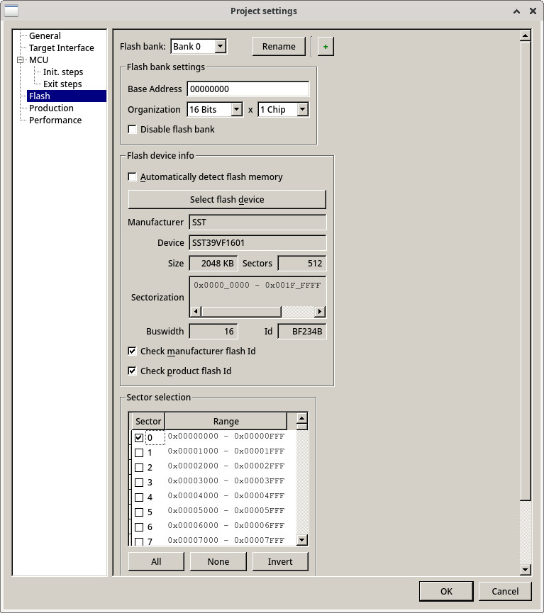
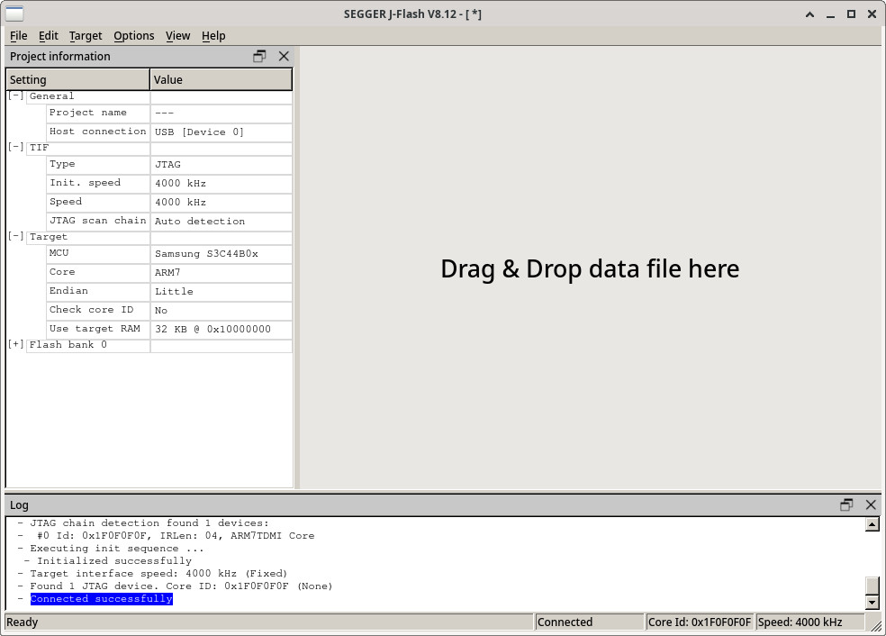
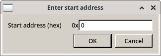
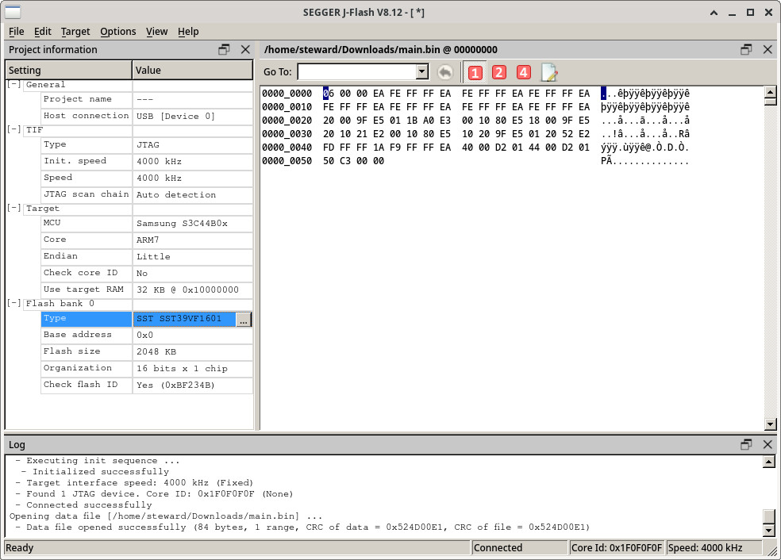
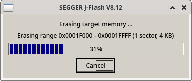
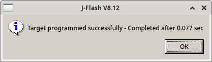
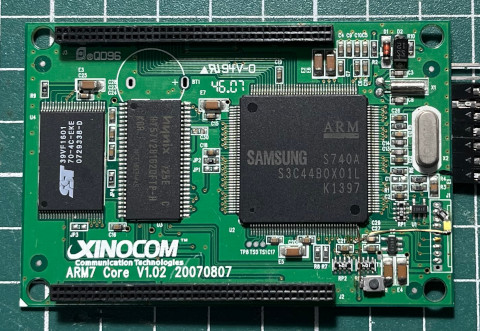
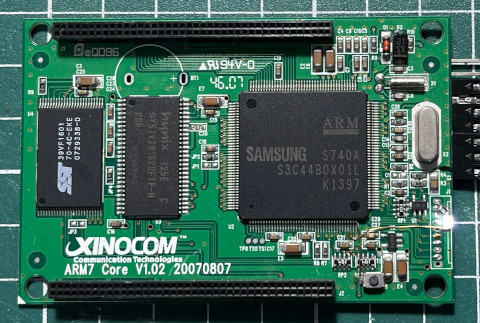